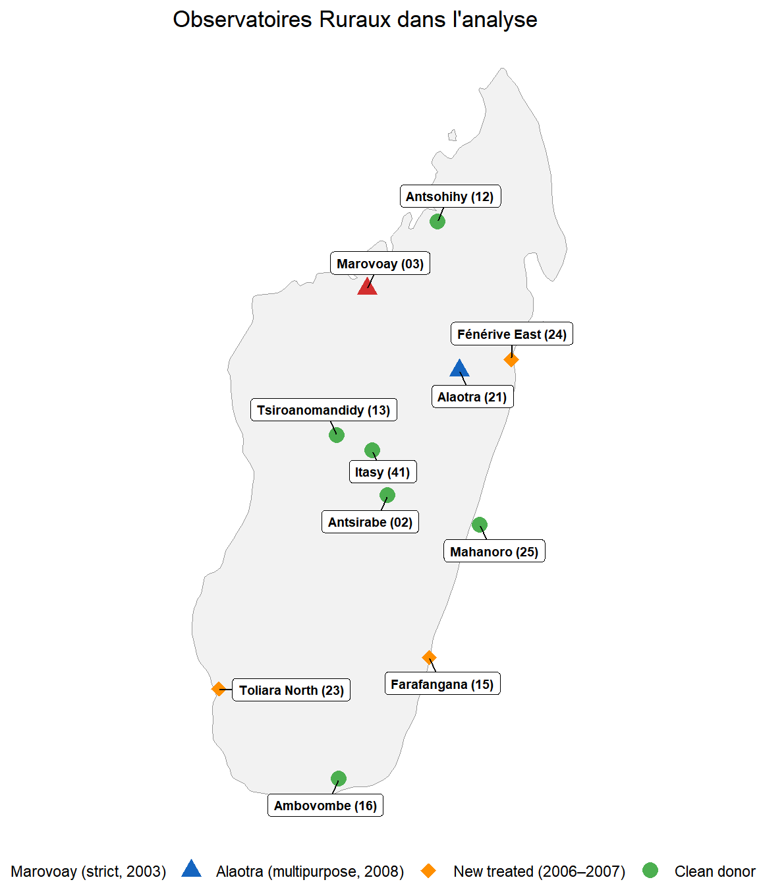
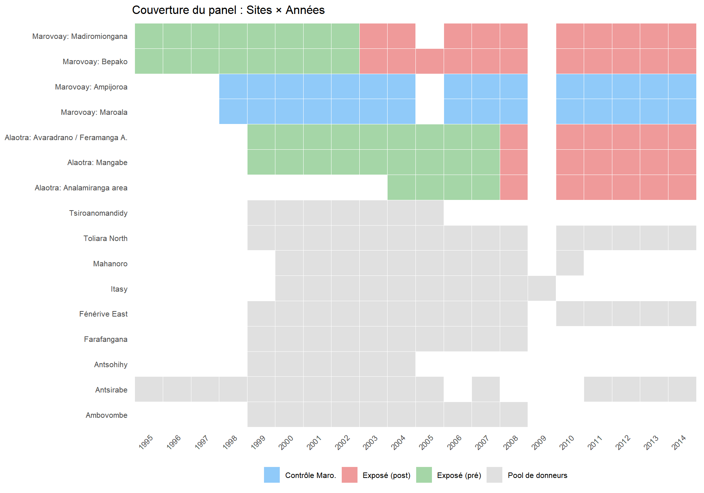
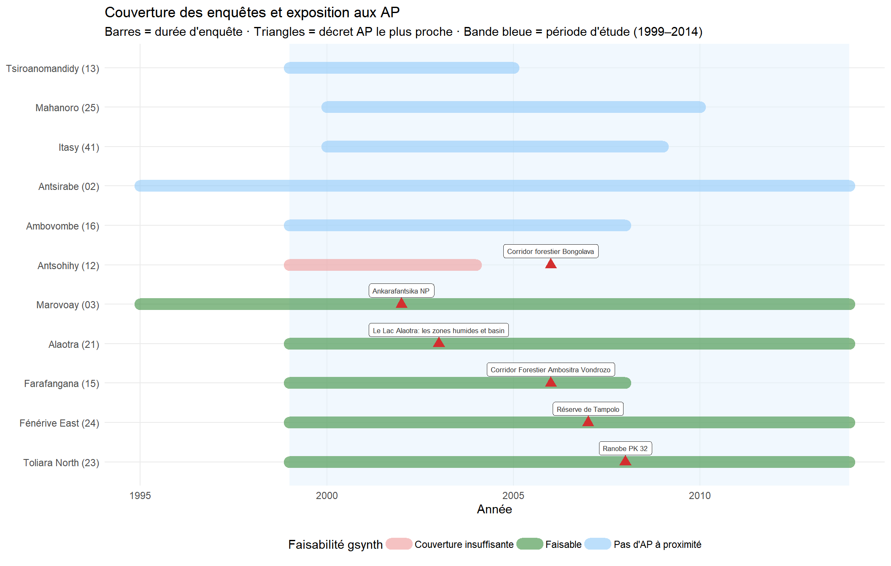
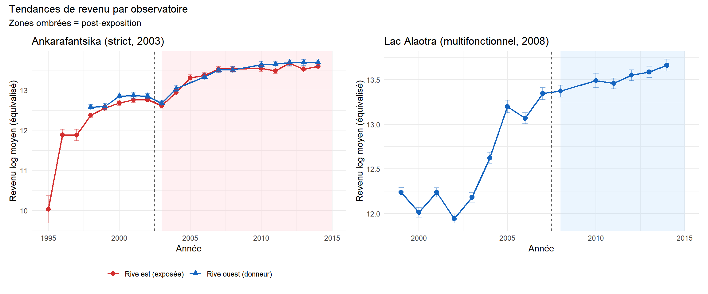

2 Données
Enquêtes des Observatoires Ruraux, géoréférencement et construction des variables
Ce chapitre résume le processus de construction des données. Le flux de travail reproductible complet — géoréférencement, analyse des chevauchements avec les aires protégées et harmonisation des variables — est documenté dans l’Annexe A. Les données d’enquête sous-jacentes sont décrites dans un article de données connexe (Andrianjafindrainibe et al. 2024).
3 Données d’enquête
Le Système des Observatoires Ruraux (SOR) a enquêté des ménages ruraux à travers Madagascar de 1995 à 2015. De nombreux observatoires n’ont été actifs que quelques années. Nous utilisons 11 observatoires actifs dès 1999–2000 et disposant d’au moins 6 années de données d’enquête. Ce jeu de données comprend environ 101,253 observations ménage-année. Chaque observatoire suit environ 500 ménages par an selon un dispositif de panel rotatif, avec remplacement aléatoire des ménages sortants préservant la représentativité transversale.

4 Géoréférencement
Les données d’enquête originales ne comportaient pas de géoréférencement systématique. Les noms de localités étaient enregistrés en texte libre, avec des orthographes incohérentes selon les années et les langues (malgache et français). Nous avons lié chaque observation aux limites administratives officielles à l’aide des Ensembles de Données Opérationnelles Communes (COD), gérés par OCHA et le BNGRC malgache. La procédure complète de géoréférencement est décrite dans la documentation des données connexe.
La procédure de correspondance est hiérarchique :
- Normalisation des chaînes de caractères : minuscules, suppression des diacritiques et des qualificatifs (centre, haut, bas), standardisation des toponymes bilingues, conversion des chiffres romains en arabes.
- Correspondance approximative : distance de Jaro-Winkler par rapport au gazettier COD, filtrée par l’appartenance au district de l’observatoire, avec un seuil de distance maximale de 0,25.
- Niveaux spatiaux en cascade : correspondance d’abord au niveau de la commune (ADM3), puis affinée au fokontany (ADM4) lorsque possible.
Le résultat est un tableau de correspondance géocodé reliant chaque identifiant de ménage ROS (j5) à sa commune et son fokontany codés P. Cela permet le recoupement spatial avec les limites des aires protégées.
5 Chevauchements avec les aires protégées
Les bases de données standard d’aires protégées — dont la WDPA actuelle et l’atlas Vahatra — n’enregistrent que la frontière et le classement les plus récents de chaque aire protégée. Nous utilisons à la place une WDPA dynamique pour Madagascar — une base de données temporellement explicite qui attribue à chaque état d’une AP un intervalle précis valide-de / valide-à dérivé des textes juridiques CNLEGIS malgaches et des versions historiques de la base de données géospatiale SAPM [INCLURE RÉFÉRENCE ARTICLE DE DONNÉES]. Cela nous permet de déterminer si un observatoire était adjacent à une AP active à tout moment pendant la période d’étude (voir l’Annexe B pour les détails complets de construction).
Pour chacun des 11 observatoires d’étude, nous calculons la distance minimale entre les centroïdes de communes (projetés en UTM 38S) et la limite d’AP la plus proche active durant 1999–2014. Toutes les paires (commune, AP) situées à moins de 20 km sont signalées. Trois configurations temporelles se dégagent :
| Configuration | Observatoires | Utilisation |
|---|---|---|
| AP antérieure aux enquêtes ROS (pas de ligne de base) | ex. Ranomafana, Andringitra | Exclus |
| AP créée pendant le ROS (1999–2014) | Marovoay (2003), Alaotra (2008) | Traitement principal |
| AP créée pendant le ROS mais plus tardive | Farafangana, Toliara, Fénérive (2006–07) | Traitement extension (Ch. 5) |

La Figure 5.1 montre que, bien que le ROS ait été conçu pour le suivi agricole et non pour l’évaluation d’impact de la conservation, certaines AP ont été créées à proximité relative de sites d’observatoire. Le gsynth nécessite un nombre suffisant d’années pré-traitement pour apprendre les coefficients factoriels spécifiques aux unités, et un nombre suffisant d’années post-traitement pour que le contrefactuel soit informatif. Nous appliquons un seuil minimal de 4 années d’enquête pré-exposition et 3 post-exposition.
Les deux paires principales — Marovoay / Ankarafantsika (stricte, catégorie II UICN, extension 2003) et Alaotra / Lac Alaotra (multifonctionnelle, catégorie V UICN, décret temporaire 2007) — offrent les fenêtres pré- et post-exposition les plus longues. Trois paires supplémentaires — Farafangana, Toliara Nord et Fénérive Est — fournissent des extensions plus courtes mais informatives (Chapitre 5). Les observatoires sans AP à proximité (en bleu) constituent le pool de donneurs. Un audit spatial systématique de la validité du pool de donneurs est présenté dans l’Annexe B.
6 Variable de résultat
La variable de résultat principale est le logarithme du revenu équivalisé des ménages. La construction se déroule comme suit :
-
Revenu total (
revtot) : somme des composantes de revenus courants : revenus riz (rev_riz), autres cultures (rev_cu), élevage (revel), pêche (revpeche), activité principale (revppal) et activité secondaire (revsec). Les composantes manquantes sont mises à zéro ; le total est imputé à partir des sous-composantes disponibles quandrevtotlui-même est manquant. - Équivalisation : à l’aide de l’échelle OCDE modifiée : \(1 + 0{,}5 \times (\text{adultes supplémentaires}) + 0{,}3 \times (\text{enfants de moins de 14 ans})\), calculée à partir des enregistrements démographiques individuels (Karvonen et al. 2021).
- Winsorisation : aux 1er et 99e percentiles par année pour limiter l’influence des valeurs extrêmes.
- Transformation logarithmique : \(y_{it} = \log(\text{revenu équivalisé}_{it} + 1)\).
L’harmonisation entre années n’est pas triviale : les noms de variables, les modules du questionnaire et les définitions des revenus ont évolué au fil des vagues d’enquête. Les détails complets de ces ajustements figurent dans l’Annexe A.

7 Statistiques descriptives
| Statistiques descriptives de l'échantillon | ||||||
| Période d'analyse : 1999–2014 | ||||||
| group | N ménage-années | Revenu moyen (Ar) | Revenu équivalisé moyen | Taille moy. ménage | Années d'éduc. moy. (adultes) | % adulte alphabétisé |
|---|---|---|---|---|---|---|
| Marovoay exposé (est) | 3873 | 1,736,175 | 700,533 | 5.0 | 4.4 | 92.0 |
| Marovoay contrôle (ouest) | 3617 | 2,135,445 | 833,960 | 5.4 | 4.5 | 91.7 |
| Alaotra (exposé) | 7613 | 1,893,377 | 691,554 | 5.1 | 4.5 | 95.6 |
| Pool de donneurs | 48052 | 1,192,493 | 453,894 | 5.5 | 4.3 | 80.1 |